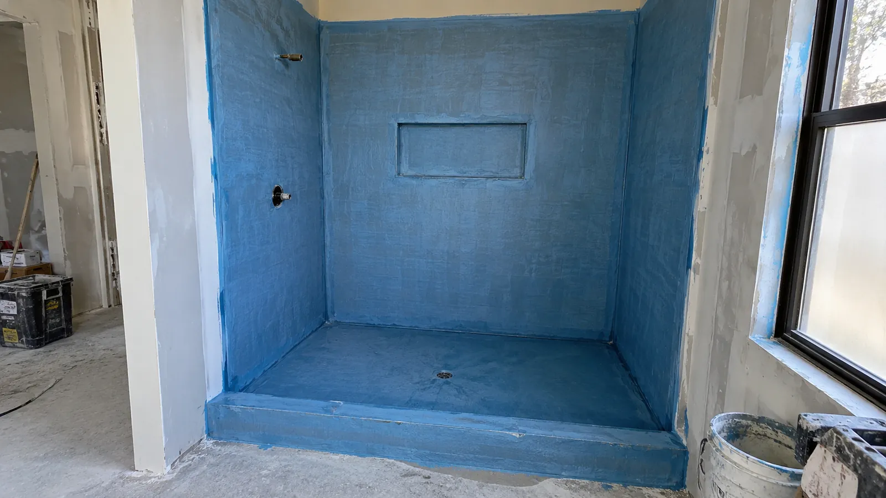

Roof waterproofing
Professional roof waterproofing for roof surfaces, junctions and penetrations. We assess the damaged or exposed area and carry out the repair work required.
View service details →Our services
Ellis Services Group delivers waterproofing and tiling for Adelaide bathrooms, wet areas, roofs, kitchens, pools, balconies and finished surfaces. We assess the work area and surface condition, then complete the service required.
CALL 0425 170 688Service category one
We provide waterproofing services for bathrooms, laundries, balconies, roofs, kitchens, pools and external surfaces.

Professional roof waterproofing for roof surfaces, junctions and penetrations. We assess the damaged or exposed area and carry out the repair work required.
View service details →Bathroom wet areas before tile and finished surfaces are installed.
View service details →Kitchen waterproofing for moisture-exposed walls, floors and junctions, coordinated with the kitchen surface work.
View service details →Balcony surfaces, edges, corners and drainage-related areas.
Read balcony waterproofing details →Laundry floors, wall junctions and other wet-area surfaces.
Read laundry waterproofing details →Waterproofing for pool interiors and water-retaining surfaces, with preparation and membrane work specified for the pool condition. Poolside tile work is covered by our pool surround tiling service.
View service details →External wall junctions, house edges, corners and exposed connection points.
View service details →Other damp-prone spaces. Include the area and visible condition in your enquiry.
View service details →Service category two
We provide tiling services for bathrooms, kitchens, balconies, rooms, courtyards and walls.

Bathroom wall and floor tiling for wet-area renovations, shower spaces and finished bathroom surfaces.
We provide tile installation for the bathroom scope, including the wall or floor areas identified in your enquiry.
Enquire about bathroom tiling →Kitchen tiling for splashbacks, feature walls and selected kitchen floor or wall surfaces.
Tell us the wall or floor area, the tile finish and whether cabinetry or appliances are already in place.
Enquire about kitchen tiling →Balcony tiling for exterior surfaces, edges and connections around the balcony area.
Include the balcony surface, current condition and intended finish in your enquiry.
Enquire about balcony tiling →Wall and floor tiling for internal rooms with a planned tiled finish.
We prepare the floor or wall, set out the tile layout and complete installation, grouting and edge details. Your quote confirms the area, materials and any removal or levelling required.
Enquire about room tiling →Courtyard and outdoor-living tiling for exterior floor surfaces and finished outdoor areas.
Include the surface condition, approximate area and intended tile finish in your enquiry.
Enquire about courtyard tiling →Wall tiling for interior feature walls, practical tiled walls and selected exterior wall surfaces.
Tell us the wall location, existing surface and proposed tile finish.
Enquire about wall tiling →Tiling services for other areas that need a finished wall or floor surface.
Describe the location, current condition and tile finish required in your enquiry.
Enquire about tiling →From preparation to finish
Ellis Services Group provides the preparation, installation and finishing in one agreed service scope. We check the room and existing surface before selecting the installation approach.
01 / Prepare
We inspect the substrate, identify loose finishes and check levels, falls and transitions. Your quote sets out tile removal, levelling or screeding and any substrate repairs required for the new finish.
Wet-area waterproofing →02 / Install
We set out tile lines, cut positions and junctions around doors, fittings and cabinetry. Tile format, surface condition and exposure guide the adhesive, grout and movement-joint detailing.
Request an installation quote →03 / Finish
We finish grout lines and flexible junctions, and confirm curing and return-to-use instructions for the products installed. Wet-area work is sequenced with the waterproofing before the tiled finish.
Bathroom service details →Material selection
For bathroom and laundry floors, we assess wet-use suitability, tile texture and drainage. Splashbacks need accurate set-out around cabinetry and fittings. Living floors need considered transitions and movement joints; balconies, courtyards and pool surrounds need exterior-suitable tiles and installation materials.
We confirm the tile selection, quantities and whether supply is included in your written quote. Large-format tiles, mosaics, cuts, access and substrate preparation all influence the installation scope and price.
We install your selected tiles or include tile supply in the agreed quote. We check tile thickness, edge finishes and transitions before installation so the finished surface fits the space.
For damaged tiles, worn grout or failed seals, choose the surface repair service below.
Get a tile installation quote →Repair services Adelaide
Book the repair for your surface: damaged tiles, worn grout, failed flexible seals or new poolside tiles. We inspect the base and confirm preparation, materials and the finished work in your quote.
Cracked, chipped or loose tiles
We inspect the damaged tile and the base beneath it, remove the affected finish and complete the agreed repair. We confirm matching tile availability and any waterproofing work before replacement.
Request a tile repairs quote →Crumbling grout lines or missing grout
We remove failed grout, prepare the joints and install suitable replacement grout. We check loose tiles and moisture-affected surfaces so the repair addresses more than the visible grout line.
Request a tile regrouting quote →Split silicone around showers and wet-area junctions
We remove deteriorated flexible seals, prepare the joint and apply a compatible replacement seal. We investigate recurring leaks and include any additional waterproofing repairs in your written scope.
Request a shower resealing quote →Pool terraces, coping and outdoor tiled finishes
We prepare and tile pool surrounds and terraces, including set-out, cuts, junctions and the exterior finish. Poolside tile installation is a separate scope from waterproofing inside the pool.
Request a pool surround tiling quote →Questions about materials, existing tiles or curing? View tiling and material FAQs →
Next step
Send your suburb, work area and current surface condition. Our team arranges an on-site assessment, checks the surfaces and project requirements and confirms the work plan and written quote.